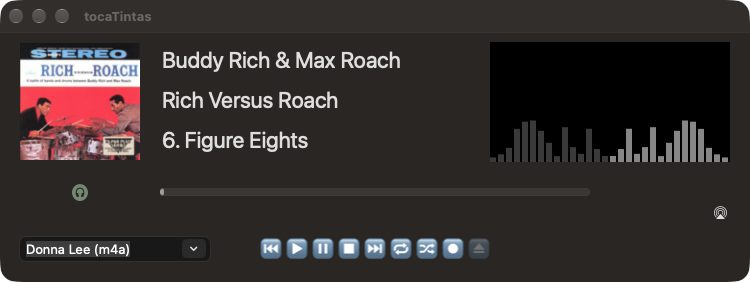

Janela principal

À esquerda fica a capa. Ao centro estão o artista, o álbum e a faixa, em etiquetas que deslizam quando o texto não cabe, e à direita o histograma. Por baixo de tudo fica a barra de progresso.
etiquetas deslizantes
Um texto que não caiba aparece truncado com «…» (Bach: Goldberg…BWV 988), como em qualquer etiqueta do macOS. Periodicamente, deslizará da direita para a esquerda para se poder ler todo. No fim, voltará à forma truncada. As bordas esbatem-se, para que o texto mude suavemente.
As três etiquetas revezam-se, e só uma deslizará de cada vez pela ordem: artista, álbum e faixa. As que cabem são saltadas. Quando começar uma faixa nova, o texto não deslizará durante 2 s. Uma passagem de texto só começará se a faixa durar tempo suficiente, para que um título não esteja a meio caminho quando a faixa seguinte começar.
escolher a música
O menu em baixo, à esquerda, lista as faixas da pasta corrente, cada uma com o formato entre parênteses: (flac), (wv) e, nos .m4a, (aac) ou (alac), conforme o que a fonoteca disser que lá está. Pode escrever-se o princípio do nome de uma faixa para a procurar. e programa autocompletará com o que encontrar que for coincidindo. O sistema funciona para caracteres acentuados e um título que comece por um número («12 Études») também se poderá procurar escrevendo esse número.
⏮ ▶ ⏸ ⏹ ⏭
Anterior, tocar, pausa, parar e seguinte. Quando o programa estiver a interagir com o Música e o tocador mostrar o que a aplicação Música estiver a tocar, os botões comandarão o Música (ver a seguir).
repetir, baralhar
O botão de repetir volta a tocar a faixa em curso quando ela chega ao fim, continuamente, até ser desligado. Cada repetição contará como uma audição nova. O botão de baralhar baralha a lista escolhida (ou a fonoteca inteira) uma vez, e essa ordem manter-se-á até ao botão ser desligado. Nenhuma faixa se repete antes de todas terem sido tocadas.
⏺
Grava para WAV (ver GRAVAÇÃO).
⏏
Ejecta o CD. Este botão só ficará activo quando houver um disco no leitor.
auscultadores (à esquerda, por baixo da capa)
Liga e desliga o tratamento de som para os auscultadores. O tratamento inclui crossfeed e equalização. Este tratamento funciona sem mexer no volume, para se poder comparar o som com e sem tratamento. Cor quer dizer ligado e branco desligado. Sem auscultadores ligados, o botão apitará se premido mas nada mudará.
AirPlay (à direita, por baixo do histograma)
Escolhe o receptor. Com ⌘-clique, a sessão com o receptor corrente será reaberta, o que resolverá os casos em que o receptor tenha adormecido ou quando a rede tiver sido interrompida durante algum tempo.
O que a aplicação Música toca
Quando o programa Música estiver a tocar e o tocaTintas não estiver, o tocador mostrará a música que o programa Música estiver tocando: a capa, o artista, o álbum, o título e a barra de progresso. O título leva ♫, o número da faixa e o número total de faixas do álbum à frente do título da faixa, para que seja claro que vem do Música e não da fonoteca. Este modo serve sobretudo para gravar. Logo que o tocaTintas toque alguma coisa sua, a janela voltará a ser sua.
os botões
Com o Música no tocador, os botões ⏮ ▶ ⏸ ⏹ ⏭ comandam o Música. O ⏸ alterna entre pausa e reprodução, como no tocaTintas. O ⏮ vai sempre à faixa anterior, também como no tocaTintas, e não ao princípio da faixa, como o botão do próprio Música. O ⏹ pára o Música e devolve a janela ao tocaTintas. Para voltar ao tocaTintas mesmo com o Música a correr, escolhe-se uma faixa da fonoteca ou simplesmente pára-se primeiro o Música.
a contagem
No canto inferior direito do tocador é mostrado quantas vezes a faixa já tocou. Para as faixas da biblioteca do Música, a contagem é a do próprio Música. O Música não guarda qualquer contagem para as faixas do catálogo do Apple Music que não tiverem uma cópia local e para as das estações. Nestes casos, gera-se uma entrada normalizada de contagem na base de dados. Esta contagem na base de dados do tocaTintas combinará essas audições do Apple Music com as audições da mesma música nos ficheiros e nos CDs (ver AUDIÇÕES DO MÚSICA).
a capa
Para as faixas da biblioteca do Música, a capa será a que o Música der. Para as faixas do catálogo e das estações do Apple Music, o tocaTintas irá buscar a capa directamente ao catálogo da Apple através da pesquisa pública do iTunes da loja do país onde o Mac estiver. Procurará primeiro o artista e, entre os álbuns dele, o que tenha o nome do que estiver a ser tocado. Se isto não funcionar, pesquisará o álbum pelo artista e pelo nome e, por fim, a faixa pelo artista e pelo título, e dela inferirá o nome do álbum. O nome do álbum compara-se sem contar maiúsculas e acentos e, se for preciso, sem sufixos de edição como «(Deluxe Version)», «- EP» ou «- Single». Entre os álbuns que coincidam, os do mesmo artista terão prioridade. Não havendo correspondência, ficará a imagem genérica, pois capa nenhuma será melhor do que capa errada. Por tudo isto, a capa poderá chegar uns instantes depois do resto.